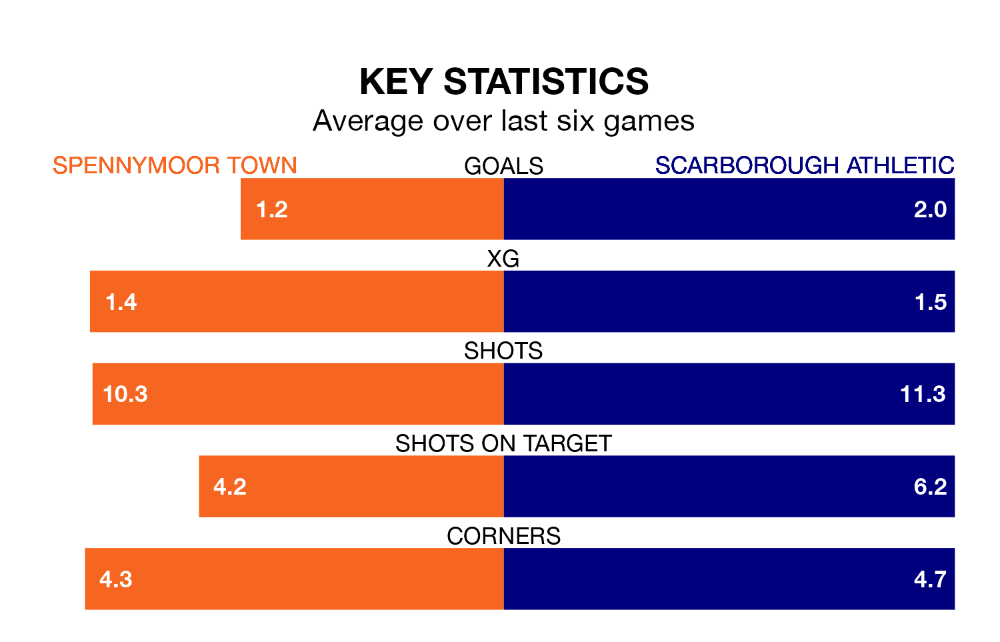

Spennymoor Town host Scarborough Athletic in Tuesday's late match at the Brewery Field looking to bounce back from defeat last time out in National League North and South.
Spennymoor, who sit zero in the league after 24 games, fell to a 2-0 home defeat to Chorley on December 26.
They face a Scarborough side who picked up a win in their last match, a 2-0 victory against Darlington, and who sit sixth in the table.
Spennymoor are in terrible form in National League North and South, with no wins and a draw from their last six games.
With four wins and two losses over that period, Scarborough's form is much better – they have taken 12 points from 18, compared to Town's one.
With 37 goals in 25 games so far this season, Athletic are scoring more than average in the league with 1.5 goals per game. And they are conceding fewer than average, letting in 29 goals at a rate of 1.2 per game.
The home team are also above average scorers, with 1.5 goals per game, compared to a league average of 1.4. They have conceded 1.7 goals per game.
Updated: 15:34, 08/01/24